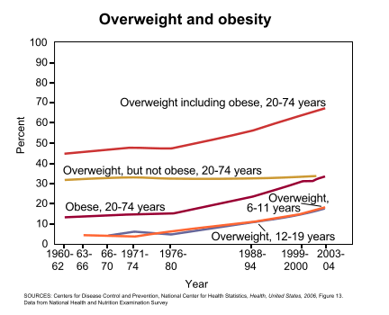

< < < Back
The Modern Dangers Of Excess – Return Of Kings
Aristotle famously observed that virtue is the middle course between excess and deficiency. Plato touched on that earlier in The Republic; those with moderate lives are happier on the whole than those whose lives are characterized by excess. Overabundance often occurs when something normally scarce becomes available in nearly unlimited quantity. Let’s see what happens.
Food

Lay off the damn junk food already! A healthy body makes a healthy mind.
Hunger has always been a problem, and it’s just as well that advances in agricultural technologies have done much to alleviate this. However, there are some drawbacks. For one thing, it’s allowed the rise of big agribusiness, while family farmers—an arrangement that has grown the world’s food since prehistory—are getting pushed aside. The grandsons of farmers might still be driving the huge GPS-guided combines, but they’re no longer working for themselves.
Further, modern agriculture has facilitated deforestation and also unsustainable growth in areas that didn’t get the memo about family planning. Worse, the leaders of the Western world are fine with allowing their countries to be safety valves for Third World overpopulation.
Moreover, the food quality has worsened: the meat is loaded up with hormones and antibiotics, the veggies are sprayed with pesticides and weed killers, and so forth. (In fact, one experimental genetically modified bacterium could have caused a global extinction event.) We’re not quite sure what all this is doing to the population, which is a pretty big gamble.
Hormones are going off kilter, one of many things that are messing up our social scene. Testosterone levels in men have been declining steadily for quite a while, and girls are maturing earlier than ever. It’s hard to say how much of this is from our diets (hormones and endocrine-disrupting pesticides), traces of birth control pills in drinking water, or plastic congealers such as bisphenol A.
One fact is pretty obvious: waistlines are expanding. This is quite notable in the USA, and other countries are not too far behind. Cheap food and couch potato lifestyles are making people fat and unhealthy. That’s really not too sexy, another factor wrecking the social scene.
Sex
This kind of speaks for itself.
The dangers of riding the cock carousel have been covered here quite well, and we’ve also described player burnout. Often the dysfunctions of men and women really aren’t so different.
An even greater problem is porn, a cheap safety valve for the sexual marketplace. It’s free for anyone who knows how to pirate the videos. Unfortunately, it’s easily addicting and messes up people’s love lives. You won’t grow hair on your palms, but porn induced ED is no joke. Also, spanking the monkey for hours a day can cause people’s tastes to go off into some very strange directions.
Substance abuse
Even then, bug juice isn’t so bad compared to dumb dust.
Alcoholism and drug addiction are nothing new. What happens when people can get booze for free? The physician Theodore Dalrymple described a job site in Africa where the workers could buy alcohol very cheaply, and sell it to the locals at a steep markup:
I discovered that, when alcohol is effectively free of charge, a fifth of British construction workers will regularly go to bed so drunk that they are incontinent both of urine and feces. I remember one man who very rarely got as far as his bed at night: he fell asleep in the lavatory, where he was usually found the next morning. Half the men shook in the mornings and resorted to the hair of the dog to steady their hands before they drove their bulldozers and other heavy machines (which they frequently wrecked, at enormous expense to the British taxpayer); hangovers were universal. The men were either drunk or hung over for months on end.
Not a pretty picture, is it? The rest of Dalrymple’s article describes why controlled substances should remain so. The argument from pure theory that people should do whatever they want with their bodies doesn’t work so well in the real world. Further, he explains why methadone programs don’t work. The article is definitely worth a read.
Money

Does it ever end?
For anyone who’s ever lived paycheck to paycheck—or worse, agonized about where the next rent money is coming from—the lives of the rich must seem like a dream. Granted, poverty sucks raw Rocky Mountain oysters; I know this from experience. Still, the opposite extreme isn’t quite all it’s cracked up to be. Much depends on what you make of it.
Some guys were born with a silver spoon in their mouths. However, most of us have to go from the ground up, generally beginning with the situation I just described. Later, as we get job experience and start to build a career, things get better. Some will plan carefully and manage finances wisely.
Others, though, go through money as fast as it comes in. Then they blow all their discretionary cash on creature comforts they really don’t need. This results in lots of unnecessary monthly charges (who really needs 500 cable channels?) and junk collecting dust on a shelf. Welcome to the hedonic treadmill, bud! Doing it wrong means you’re still spinning your wheels like you did when you were dead broke; now the wheels are just spinning faster. Nothing is saved for an emergency fund, a down payment on a house, or a retirement account.
Worse, many dig themselves into a rut, racking up tens of thousands on credit cards. The chains of slavery are forged one link at a time. By the time reality hits them in the face, they’re living paycheck to paycheck and the surplus feeds the banksters. Is keeping up with the Joneses really that important? Epic celebrity bankruptcies show that even the rich and famous aren’t immune to bad spending habits, despite making money that others can only dream about.
So how does it look at the high end of the income spectrum? Those who start at the bottom and make it big sometimes discover they’ve traded one set of problems for another. For one thing, there are the sycophants, scammers, and people they hadn’t heard from since third grade looking for an easy mark. As for lottery winners, there are a number of tragic cases where people in many ways ended up worse off than they were. Also, the psychological effects of excess wealth can be quite pernicious. Those freed from the common man’s struggle for survival often end up getting big egos and throw temper tantrums about nothing.
Power

One of them would be delighted to rule the galaxy. The other one is a Star Wars character.
These days, power comes from having a ridiculous amount of wealth. So what are the global elites doing? Should they look to the example of the wealthy in the Renaissance and become patrons of the arts, commissioning immortal classics still celebrated centuries later? Should they do as many Industrial Age robber barons did and promote high culture? Should they give their workers a big raise in recognition of all their hard work that enriched the CEOs?
Nah, ain’t happening. Today’s plutocrats are just as corrupt as any in the world’s history, flaunting their wealth before the masses they consider to be sheeple. You’d think they’d have the sense to rule responsibly and not kill the goose that laid the golden egg. Unfortunately, the party line of the elites is cultural Marxism. It’s an inherently destructive ideology, because it was designed that way.
Why the hell do they do this? Maybe some—insulated from reality by their wealth—really think this will make the world a better place. Others promote globalism for profits: low tariffs and cheap labor. Some engage in virtue-signaling to show everyone how wonderful and compassionate they are. (Those with even a little perspective know deep down that they’re not really that special, no better than the common people they’re lording it over. Surely these must be scary thoughts.) As for the worst, they dream of a world where their posterity rules over billions of docile, deracinated peasants. They consider their social engineering a means to bring this about. Mythology tells us that the Gods punish hubris; may this be so.
In summary
Steer the middle course. Avoid excess, for it is the path to decay and ruin. These temptations lead to illusory happiness, but the ultimate downfall is not long to come. If hedonism is dangled before you like a shiny fishhook, it is wise not to take the bait. When boundless abundance is spread before you, there is yet a better way, which lies in the pursuit of excellence. Simply put, be the best person you can be.
Read More: Hillary And Bill Clinton Are Criminal Masterminds Wielding Incredible Power